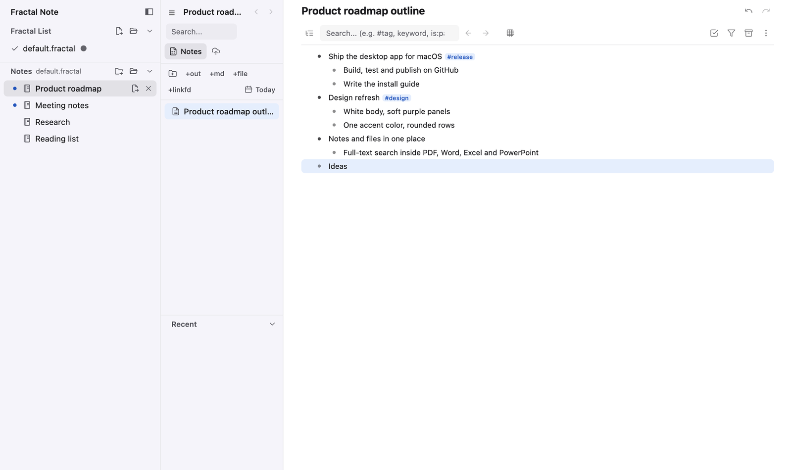
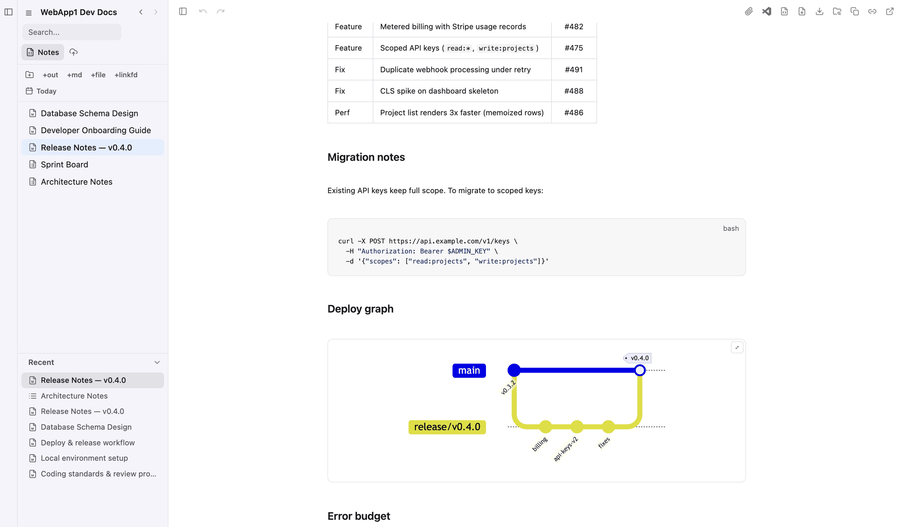
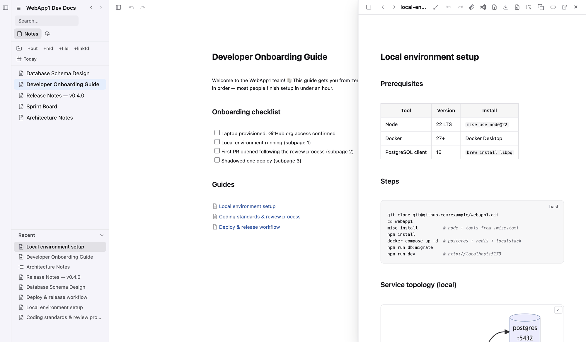
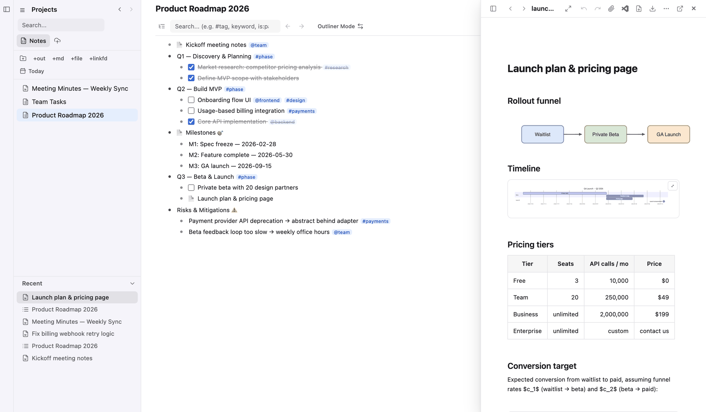
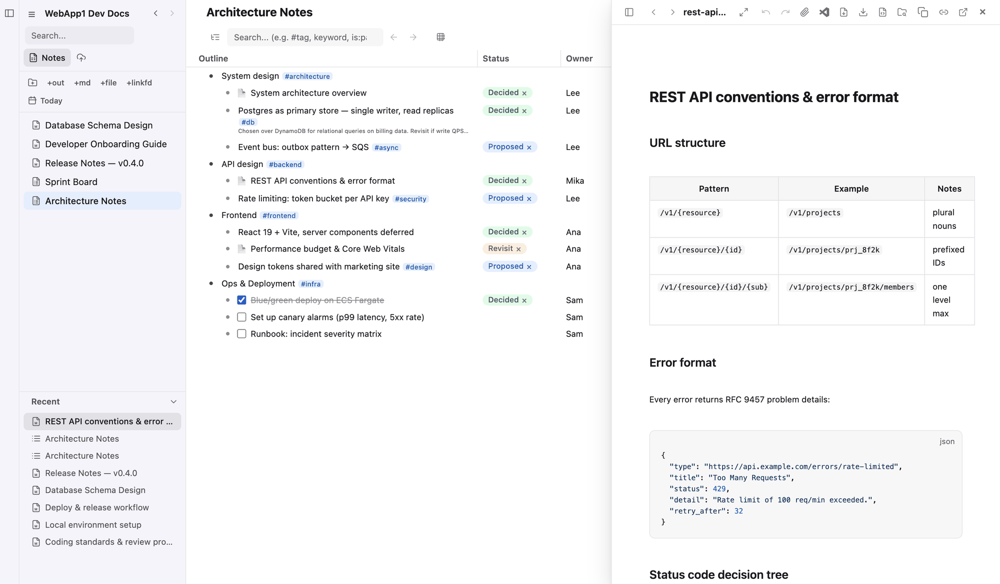
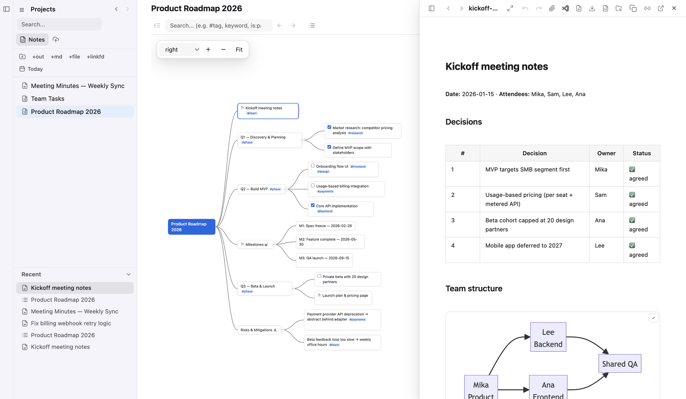
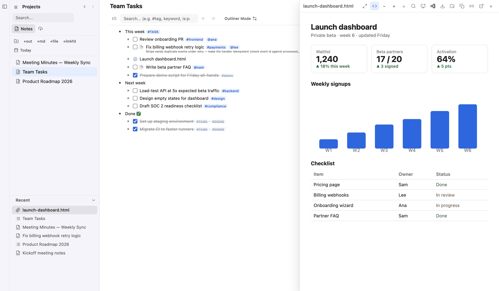

Your notes and your files,
in one place.
ノートとファイルを、
ひとつの場所に。
Designed to feel like Notion —
and to stay fully local and fast, like Obsidian.
Notion のような使い心地のまま、
Obsidian のようにローカルで完結 & 高速を目指しました。
Fractal Note puts a Notion-like WYSIWYG markdown editor and a Dynalist-like outliner — with Database and Mindmap modes — in one workspace. Keep PDF, Word, Excel and PowerPoint files next to your notes, and search inside them. Notion のように書ける Markdown エディタと、Dynalist のようなアウトライナー（データベース・マインドマップのモードつき）をひとつに。PDF・Word・Excel・PowerPoint などのファイルもノートの隣に置けて、中身まで全文検索できます。

See it画面
The desktop app on a sample note. The VS Code extension looks and works the same. サンプルの note を開いたデスクトップ版です。VS Code 版も同じ見た目・同じ操作です。






Desktop app for macOSmacOS のデスクトップ版
Fractal as a standalone app — no VS Code needed. It runs the very same code as the VS Code extension, so your notes look and work the same in both. VS Code が無くても使える、単体のアプリです。VS Code 版と同じコードで動くので、ノートの見た目も操作も同じです。
- Apple Silicon (M1 or later) or Intel MacApple Silicon（M1 以降）または Intel の Mac
- macOS 13 Ventura or latermacOS 13 Ventura 以降
- Not yet for Windows or LinuxWindows・Linux はまだ対象外
Install入れ方
-
Download and open the dmgdmg をダウンロードして開く
Download
Fractal-mac-arm64.dmgfor Apple Silicon orFractal-mac-x64.dmgfor an Intel Mac, and double-click it. (Not sure? Apple menu → About This Mac: “Chip: Apple M…” is Apple Silicon, “Processor: Intel…” is Intel.) Apple Silicon の Mac はFractal-mac-arm64.dmg、Intel の Mac はFractal-mac-x64.dmgをダウンロードして、ダブルクリックで開きます（どちらか分からないときは、アップルメニュー →「このMacについて」で「チップ: Apple M…」なら Apple Silicon、「プロセッサ: Intel…」なら Intel です）。 -
Drag it to Applicationsアプリケーションフォルダにドラッグする
In the window that opens, drag
Fractal.apponto the Applications folder. 開いたウインドウで、Fractal.appを「アプリケーション」フォルダにドラッグします。 -
Open FractalFractal を開く
Open Fractal from Applications. The app is signed with an Apple Developer ID and notarized by Apple, so macOS only asks once whether to open an app downloaded from the internet — click Open. 「アプリケーション」から Fractal を開きます。Apple の Developer ID で署名し、Apple の公証（notarize）も通しているので、macOS が「インターネットからダウンロードされたアプリ」の確認を 1 回出すだけです。開く を押してください。
-
Start writing使いはじめる
Fractal opens your notes list,
~/.fractal/default.fractal— the same list the VS Code extension uses on this Mac. Add a folder as a note from the sidebar. Fractal は note の一覧~/.fractal/default.fractalを開きます。この Mac の VS Code 版と同じ一覧です。左のサイドバーからフォルダを note として足せます。
Update新しい版にする
Quit Fractal, download the new dmg and replace Fractal.app in Applications. There are no automatic updates yet — see Releases.
Fractal を終了し、新しい dmg をダウンロードして「アプリケーション」の Fractal.app を置き換えます。自動の更新はまだありません。版の一覧は Releases にあります。
Settings設定
Fractal → Settings… (⌘,) opens the settings screen: the same fractal.* settings as in VS Code, applied as you change them. They are saved in the app's own settings.json (Help → Open Settings File); VS Code's settings are not read.
Fractal → Settings…（⌘,）で設定の画面が開きます。VS Code 版と同じ fractal.* の設定で、変えるとすぐ効きます。保存先はアプリの settings.json です（Help → Open Settings File で開けます）。VS Code の設定は読みません。
Not in the desktop app yetデスクトップ版でまだできないこと
- S3 sync and translationS3 の同期と翻訳
- Opening draw.io diagrams in an external editordraw.io を外のエディタで開く
- Automatic updates自動の更新
Uninstall消すとき
Delete Fractal.app. The app's own data is in ~/Library/Application Support/Fractal. Your notes are never touched.
Fractal.app を削除します。アプリのデータは ~/Library/Application Support/Fractal にあります。ノートには触れません。
VS Code extensionVS Code 版（拡張機能）
The same Fractal Note inside VS Code and VS Code–compatible editors — on macOS, Windows and Linux (tested day to day on macOS). VS Code と、その互換のエディタの中で使う Fractal Note です。macOS・Windows・Linux で動きます（ふだん確かめているのは macOS です）。
VS Code Marketplace
For Visual Studio Code. Search for “Fractal Note” in the Extensions view, or: Visual Studio Code 向けです。拡張機能のビューで「Fractal Note」を検索するか、次のコマンドで入れます:
code --install-extension imaken.fractalOpen VSX
For VSCodium, Cursor, Kiro, Gitpod, Eclipse Theia and other editors that use the Open VSX Registry. VSCodium・Cursor・Kiro・Gitpod・Eclipse Theia など、Open VSX Registry を使うエディタ向けです。
AI agent pluginAI エージェントの plugin
An MCP server and a skill that let Claude Code, Codex and Kiro search, read and edit your notes — outlines, markdown pages, attachments — with the same code as the app, so the result is the same as doing it on screen. Claude Code・Codex・Kiro が、ノート（アウトライン・Markdown のページ・添付）を探して、読んで、書けるようにする MCP サーバーと skill です。アプリと同じコードで動くので、画面で操作したのと同じ結果になります。
- Node.js 18 or laterNode.js 18 以降
- git
- Built from this repositoryこのリポジトリから作って入れます
-
Get the repositoryリポジトリを取ってくる
git clone https://github.com/raggbal/fractal && cd fractal && npm install -
Install the pluginplugin を入れる
Builds the plugin and installs it into every agent it finds: Claude Code and Codex as a plugin, Kiro as a Power. For Antigravity it prints the command to set by hand. plugin を作り、見つかったエージェントすべてに入れます。Claude Code と Codex は plugin、Kiro は Power として入ります。Antigravity には手で設定するコマンドを表示します。
agent-capability/install.shOnly some agents:
--only claude,codex,kiro. See what it would do:--dry-run. 一部のエージェントだけ:--only claude,codex,kiro。何をするかだけ見る:--dry-run。 -
Start a new session新しいセッションで使う
The tools (
fractal_search,fractal_get,fractal_add, …) appear in a new session (Claude Code: or/reload-plugins). Ask, for example, “Summarize this week's meeting notes in Fractal”. 新しいセッションで tool（fractal_search・fractal_get・fractal_addなど）が使えます（Claude Code は/reload-pluginsでも）。たとえば「Fractal の今週の議事録をまとめて」と頼めます。
Install by hand手で入れるとき
After npm install and npm run build:mcp in the repository:
リポジトリで npm install と npm run build:mcp をしてから:
- Claude Code:
/plugin marketplace add <repo>/agent-capability→/plugin install fractal@fractal-local - Codex:
codex plugin marketplace add <repo>/agent-capability→codex plugin add fractal@fractal-local - Kiro:
kiro-cli powers install <repo>/agent-capability/plugin(or Powers → Add Custom Power → Import power from a folder)（または Powers → Add Custom Power → Import power from a folder）
Update and remove更新と削除
Update after git pull:
git pull のあとに更新:
agent-capability/install.sh --update
Remove: agent-capability/install.sh --uninstall. Details: agent-capability/README.md
外す: agent-capability/install.sh --uninstall。詳しくは agent-capability/README.md
Web clipper for ChromeChrome の Web クリッパー
Save any web page into a note — as a page in an outline or under a markdown page — straight from Chrome or Edge, without VS Code. The article is extracted and converted to markdown the same way Fractal converts pasted HTML. Web ページを note に保存します（アウトラインのページとして、または Markdown のページの下に）。VS Code を使わず、Chrome・Edge から直接。記事を取り出し、Fractal が貼り付けた HTML を変換するのと同じ方法で Markdown にします。
- Chrome or EdgeChrome か Edge
- Your notes list (
.fractal) from the desktop app or the VS Code extensionデスクトップ版か VS Code 版の note の一覧（.fractal） - Loaded from this repository (not in the Chrome Web Store yet)このリポジトリから読み込みます（Chrome ウェブストアにはまだありません）
-
Get the repositoryリポジトリを取ってくる
git clone https://github.com/raggbal/fractalNo build needed. Without git: Code → Download ZIP on GitHub, and unzip it. ビルドは要りません。git が無ければ、GitHub の Code → Download ZIP で zip を落として開きます。
-
Load it into ChromeChrome に読み込む
Open
chrome://extensions, turn on Developer mode (top right), click Load unpacked and choose thechrome-extensionfolder of the repository. Its settings open by themselves the first time; the language is at the top right.chrome://extensionsを開き、右上の デベロッパーモード を ON にして パッケージ化されていない拡張機能を読み込む を押し、リポジトリのchrome-extensionフォルダを選びます。初回は設定が自動で開きます。英語で開くので、右上の Language で「日本語」にすると、この手順と同じ表示になります。 -
Choose your .fractal.fractal を選ぶ
Click 📄 Choose .fractal… and choose the notes list Fractal uses,
~/.fractal/default.fractalby default.~/.fractalis a hidden folder: on a Mac, press ⌘⇧G in the dialog and type~/.fractal. Notes you add in Fractal later show up by themselves. 📄 .fractal を選ぶ… を押し、Fractal が使っている note の一覧（既定は~/.fractal/default.fractal）を選びます。~/.fractalは隠しフォルダなので、Mac はダイアログで ⌘⇧G を押して~/.fractalと入力します。あとで Fractal で足した note もそのまま出ます。 -
Enable your notesnote を有効にする
Chrome lets an extension write only into folders you choose yourself, so a yellow box in the settings lists the folders to choose (for example
~/workspace/fractal). Click Choose… next to one: it copies the path and opens the folder dialog. Press ⌘⇧G, paste with ⌘V, press Enter, click Select and let Chrome edit files. Every note inside that folder is ready; notes of another computer in the.fractalare skipped. Star (☆) the notes you use most to show them first. If Chrome forgets the permission later (for example after a restart), the yellow box shows Allow again — one click. Chrome は、拡張機能が書き込めるフォルダをあなたに選んでもらう決まりです。設定画面の黄色い枠に選ぶフォルダが並ぶので（例~/workspace/fractal）、その横の 選ぶ… を押します。パスがコピーされ、フォルダを選ぶ画面が開きます。⌘⇧G を押して ⌘V で貼り付け、Enter、選択 を押して、ファイルの編集を許可します。そのフォルダの中の note すべてに保存できます（.fractalに入っているほかのコンピューターの note は対象外）。よく使う note は ☆ を押すと先に出ます。あとで Chrome が許可を忘れたとき（再起動など）は、黄色い枠の もう一度許可 を 1 回押します。 -
Clipクリップする
On any page, click the clipper's icon, pick the note and where in it, and click 📌 Bookmark. Alt+Shift+F saves to the place you saved to last, without opening the popup. 保存したいページでクリッパーのアイコンを押し、note と保存先を選んで 📌 Bookmark を押します。Alt+Shift+F は popup を開かずに、最後に保存した場所に保存します。
Update新しい版にする
git pull (or a new zip), then click ↻ on Fractal Web Clipper in chrome://extensions. Your settings stay.
git pull（zip なら新しい zip で置き換え）してから、chrome://extensions の Fractal Web Clipper の ↻ を押します。設定はそのままです。
Uninstall消すとき
Click Remove in chrome://extensions. Your notes are never touched. Details: chrome-extension/README.md
chrome://extensions で 削除 を押します。note には触れません。詳しくは chrome-extension/README.md
What's insideできること
Plain .md files and JSON on your disk — no lock-in.
中身はディスクの上のふつうの .md と JSON です。ほかのツールに縛られません。
✍️WYSIWYG Markdown見たまま書ける Markdown
Edit and read in one view. Tables with cell merging, code blocks, Mermaid, math and draw.io — rendered live. Subpages like Notion. 書きながら読めます。セルの結合もできる表・コード・Mermaid・数式・draw.io をその場で表示。Notion のような子ページも作れます。
🌲A real outliner本格的なアウトライナー
Dynalist-style tree editing with tags, tasks and filters — and the same outline as a Database table or a Mindmap. Dynalist のような木の編集に、タグ・タスク・絞り込み。同じアウトラインを Database の表や Mindmap でも見られます。
🗂Notes and files togetherノートとファイルを一緒に
Attach any file to a note and move it freely between the tree, outline nodes and markdown. Full-text search reaches inside PDF, Word, Excel and PowerPoint. どんなファイルも note に置け、ツリー・アウトライン・Markdown の間で自由に動かせます。全文検索は PDF・Word・Excel・PowerPoint の中まで届きます。
🤖Works with AI assistantsAI と一緒に使える
Changes made by Claude Code, Codex or Kiro show up on screen in real time, while your cursor and edits stay put. Claude Code・Codex・Kiro が書き換えた内容はすぐ画面に出ます。カーソルの位置や書きかけの内容はそのままです。